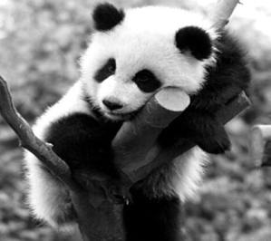
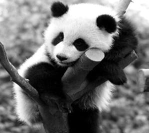

El panda, oso panda o panda gigante (Ailuropoda melanoleuca) es una especie de mamífero del orden de los carnívoros y aunque hay una gran controversia al respecto, los últimos estudios de su ADN lo engloban entre los miembros de la familia de los osos (Ursidae), siendo el oso de anteojos su pariente más cercano, si bien este pertenece a la subfamilia de los tremarctinos. Por otro lado, el panda rojo pertenece a una familia propia e independiente; Ailuridae. La especie está muy localizada. Nativo de China central, el panda gigante habita en regiones montañosas, principalmente las de Sichuan, hasta una altura de 3500 msnm.
Con 1600 ejemplares viviendo en las selvas y 188 en cautiverio (estadísticas 2004-2005), los informes demuestran que la cifra de pandas viviendo en libertad va en aumento.2 El oso panda es el símbolo de WWF (Fondo Mundial para la Naturaleza) desde 1961.
El principal alimento del panda es el bambú (en torno al 99 % de su dieta), aunque también se alimenta de frutos, pequeños mamíferos, peces, e insectos.3 Es un buen trepador, aunque rara vez se le ve en los árboles. Se adapta a la cautividad y gracias a su pelaje soporta fácilmente las condiciones invernales de su hábitat.
Exteriormente, el panda se asemeja a un oso de coloración contrastante. El panda de Sichuan presenta el reconocido pelaje negro y blanco, mientras la subespecie de Qingling tiene un pelaje de dos tonos contrastantes de marrón.
Las orejas, nariz, los pelos alrededor de los ojos, los hombros y los miembros son oscuros. La cara, vientre y el lomo son blancos. Las orejas son ovales y erectas. La pata del panda, con cinco dedos, presenta un "sexto dedo" a manera de un pulgar. Se trata de la modificación de un hueso sesamoideo de la muñeca. Stephen Jay Gould, escribió un ensayo sobre este caso, que publicó en la recopilación The Panda's Thumb (1980).4 Sus patas delanteras son fuertes y aptas para escalar y más largas y musculosas que las traseras. Sus ojos son pequeños, y mientras las pupilas de los demás osos son redondas, las del panda son como las de los gatos, lo que les da el nombre en chino de oso-gato.
Las crías de panda al nacer pesan de 90 a 130 gramos, y es casi pelado, pero de adultos, pueden pesar entre 70 y 125 kg.

 
